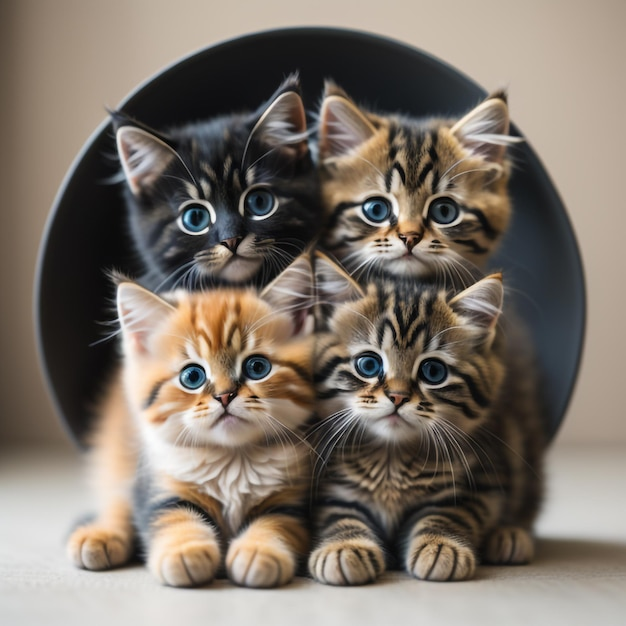

Foros de gatos
Click para ver mais Fotos de gatos
Facto sobre gatos
Coisas que gatos amam
- Catnip (Ervas para gatos)
- Amassar pãozinho
- Cheirar azeitonas

Top 3 de coisas que gatos odeiam:
- Ir ao veterinario
- Fogos de artificios
- Invasores
Colabore
Responda essa pesquisa nos ajude a entender mais sobre esses bichinhos.
PS: Se você quiser, pode anexar uma foto do seu gato para fazer parte da nossa galeria